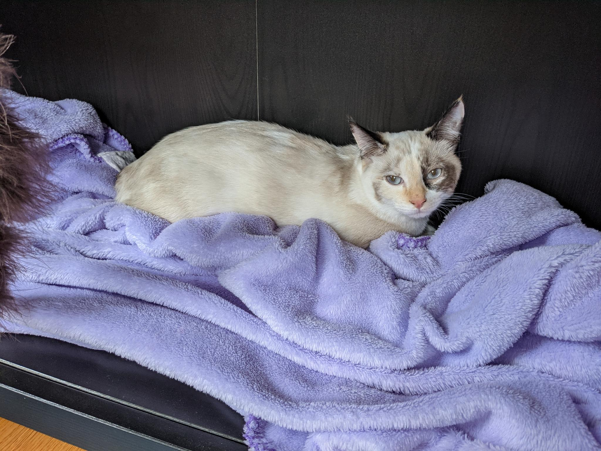
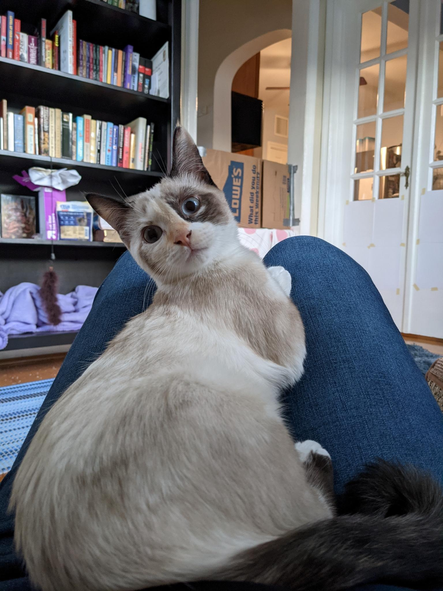
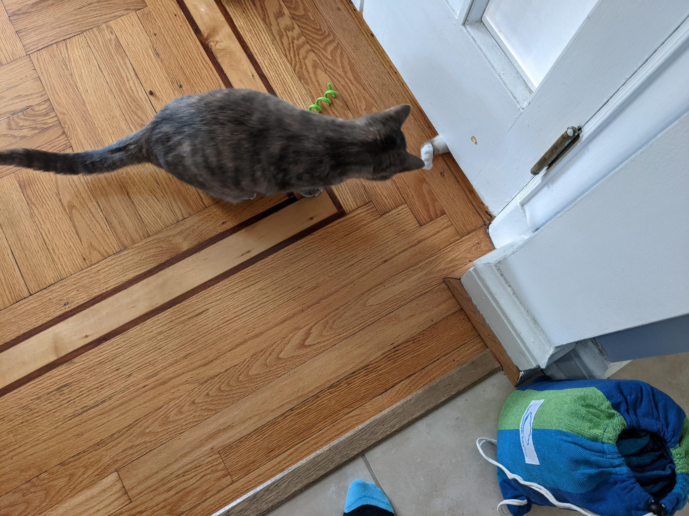
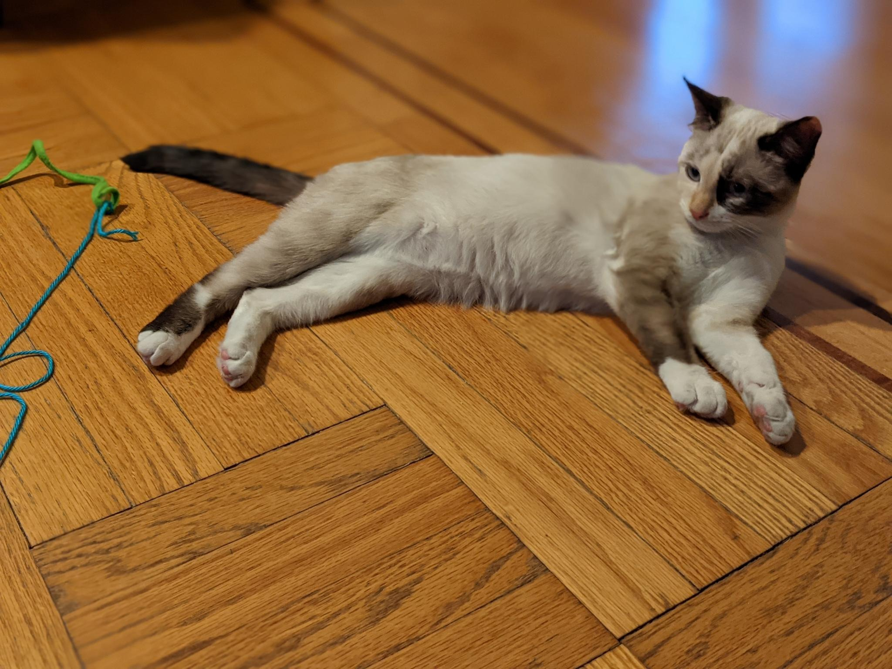
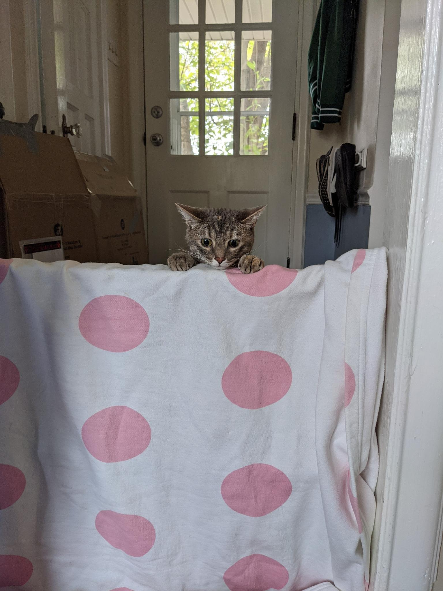
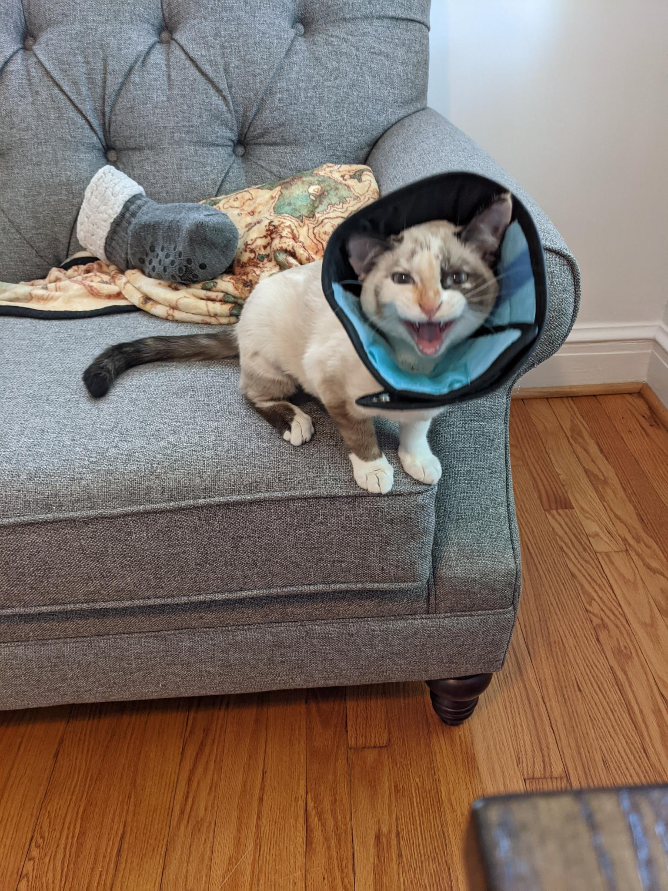

Pixel grows and loves spending time with us in the office, "helping" with work and enjoying the view out of the window, occassionally barking at the local wildlife.
April 2021
Knowing that cats are more social than they are given credit for, we worry that Pixel needs a buddy. I return to petfinder.com and find Ada available for adoption from Pet Rescue Network. After a meet and greet with her fosterer, we bring her home.
We initially set Ada up in her own space in the library to give her some time to adjust to a new home and to give Pixel time to adjust to a new scent before meeting the new arrival. They are quickly curious about each other.






May 2021 - Today
While they haven't become the best of friends, Pixel and Ada have a tolerant truce most days. They often tussel, but also can be spotted ignoring each other in close proximity when they are both determined to be in a window or other space.
Pixel loves to snuggle with the humans in the house and Ada protects us all from the evils of the air purifier, which only she knows.